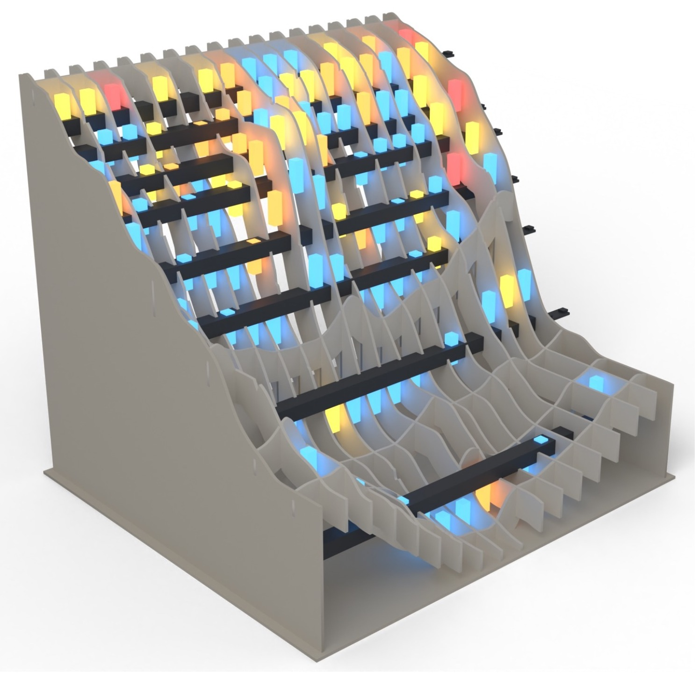
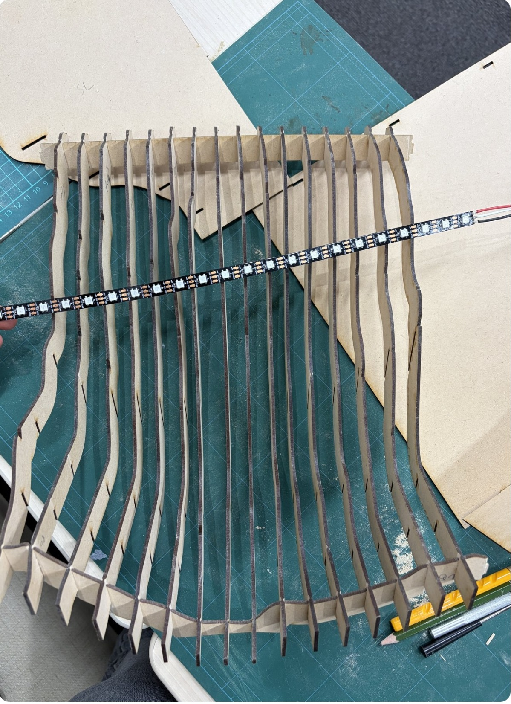

Seabed to 3D · 海底を3Dに
Blender turns the Sagami Bay profile into a slope with 109 light positions.
相模湾の断面をBlenderで斜面にし、109の光の位置を決める。
109 species · one light each
109 shark species off Japan, from the shore to the deep sea. One light per species, placed at the depth where it lives.日本近海のサメ109種、沿岸から深海まで。1種につき1つの光を、その種が棲む水深に置く。

46 of 109 species are threatened
109種のうち46種が絶滅危惧

Blender turns the Sagami Bay profile into a slope with 109 light positions.
相模湾の断面をBlenderで斜面にし、109の光の位置を決める。
18 profile boards of 2 mm wood, held together by 5 slotted cross bands.
厚さ2mmの木板18枚を、5本の横材で組み合わせる。
One addressable LED per species, wired in 8 strands between the boards.
1種につきLED1個。8本の配線で板の間をつなぐ。
An Arduino UNO R4 WiFi plays the light cycle; a 5 V supply powers it all.
Arduino UNO R4 WiFiが光のサイクルを動かす。
A live cycle of all 109 lights
For 30 seconds all 109 species glow. Height shows depth, colour shows the Red List status.
30秒間、109種すべてが光る。高さは水深、色はレッドリストの評価。
The 46 threatened species, yellow, orange and red, blink three times. Blue stays on.
黄・橙・赤の絶滅危惧46種が3回点滅する。青は光り続ける。
Red goes dark first, then orange, then yellow. Only the 63 blue species remain, then all lights return.
赤、橙、黄の順に消え、青の63種だけが残る。その後、すべての光が戻る。
A thought experiment, not a forecast. これは予測ではなく思考実験です。